Development of Sales & Inventory System
With QR Code-Based Ordering and Predictive Analytics
Research Group
Alvior Dionisio DR. • Ordiales, John Mark B.
Reyes, Justine C. • Venturina, Jozel V.
Presentation Date: June 8, 2026
Challenges in the Manual System
Target Client: FCJ's Barihan Branch
Located in Barihan, Malolos, Bulacan, FCJ's Barihan branch was constrained by a highly localized, manual record system. Transactions were handwritten, inventory tracking was delayed, and critical financial statistics were assembled by hand.
"Handwritten records and spreadsheets routinely led to inventory discrepancies, delayed sales updates, and lost operational productivity."
Manual recording of transactions often results in mathematical errors and incomplete sales logs.
Delayed updates to stock volumes lead to discrepancies, resulting in stockouts or overstocking.
Committing to manual methods yields slow, time-consuming compilations of sales and inventory reports.
Unclear role division and the absence of system logs limit traceability and security auditing.
Research Objectives
The main mission of this capstone research is to develop and systematically evaluate a tailored, web-based Sales and Inventory Management System with dual-channel QR Ordering and machine-learning forecasting algorithms to resolve client bottlenecks.
System Core Paradigm
Shift operations from reactive manual transcription to a proactive, database-backed analytical structure.
- Unified Sales System: Implement QR code client-side ordering synced simultaneously with a traditional cashier-assisted administrative panel.
- Centralized Real-Time Inventory: Track exact shelf and stock metrics with automatic inventory deductions during transactions.
- Analytical Demand Planning: Deploy statistical regression models to forecast sales trends based on operational histories.
- Secure Accountability: Enforce strict Role-Based Access Controls (RBAC) along with automatic cryptographic audit trails.
Input-Process-Output Model
Operational Raw Data
- Historical Sales Records (quantities, values, times)
- Existing Inventory catalogs and threshold parameters
- Client business requirements and hardware profiles
Development & Math
- Dual-Channel Order pipelines (QR / Cashier)
- Real-time inventory deduction & DB synchronization
- Holt's Linear Trend & Linear Regression models
Business Intelligence
- Dynamic Web-based Sales & Inventory System
- Predictive Restocking Alerts and automated forecasts
- Granular Audit Logs and ISO-compliant parameters
Agile Scrum & KDD Data Process
Agile Scrum Methodology
The software interface and core mechanics were developed in 2-to-4 week sprints under the Agile Scrum framework, allowing for continuous developer iteration, immediate supervisor review, and rapid client validation.
Planning • Requirements Analysis • Coding Sprints • Review & Integration • Incremental Deployment
KDD (Knowledge Discovery in Databases)
The predictive engine followed a structured 5-stage KDD timeline to transform raw local spreadsheets into mathematical variables.
Data Selection & Cleaning: Removed duplicate rows, structured null values, and organized outliers.
Transformation & Mining: Converted parameters into trend signals for Holt's Linear Smoothing.
Dual-Channel Ordering
Inclusivity Meets Performance
To ensure high accessibility across all generations of customers, the system supports both digital self-service via QR codes and traditional cashier-assisted point-of-sale inputs.
Integrated receipts and real-time queues allow customers to scan, review, and complete orders using their own mobile screens.
Figure: Unified Dual-Channel Ordering Data Pipeline
Real-time Inventory & RBAC
Database Synchronization & Security
Every single order subtraction maps immediately to the centralized inventory database. When thresholds are breached, the system alerts managers to restocking deadlines, ensuring shelf integrity.
System Tech Stack: Built on a high-speed Laravel PHP API backend, interactive React.js web components, and a robust MySQL relational database.
Figure: System Role-Based Access Control (RBAC) Architecture
Predictive Analytics & Forecasting
Data-Driven Inventory Optimization
By mapping historical sales histories over multiple weeks and months, the system determines the optimal amount of materials to acquire, helping to maximize profit and reduce expired stock.
Proactive restocking alerts reduce the risk of stockouts while avoiding cash tied up in excess inventory.
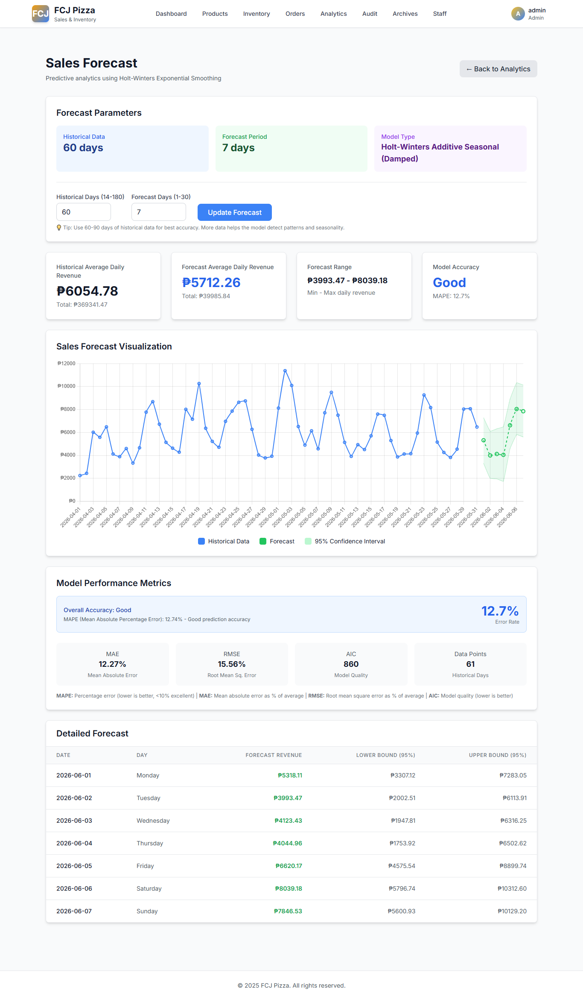
Predictive Analytics Core
Figure: Predictive Analytics & Forecasting Dashboard
System Automations & Innovations
Instant Ingredient Deductions
QR-code order submissions automatically deduct precise ingredients from the database in real time. Eliminates physical count lags and ensures immediate transactional tracking.
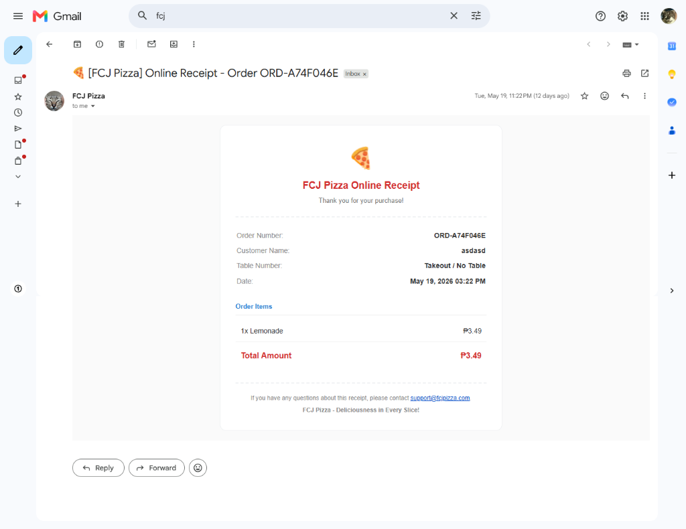
Automated Stock Alerts
Monitors material volumes continuously. The system triggers automated low-stock warnings to the manager's terminal immediately when quantities cross safety lines, preventing service disruptions.
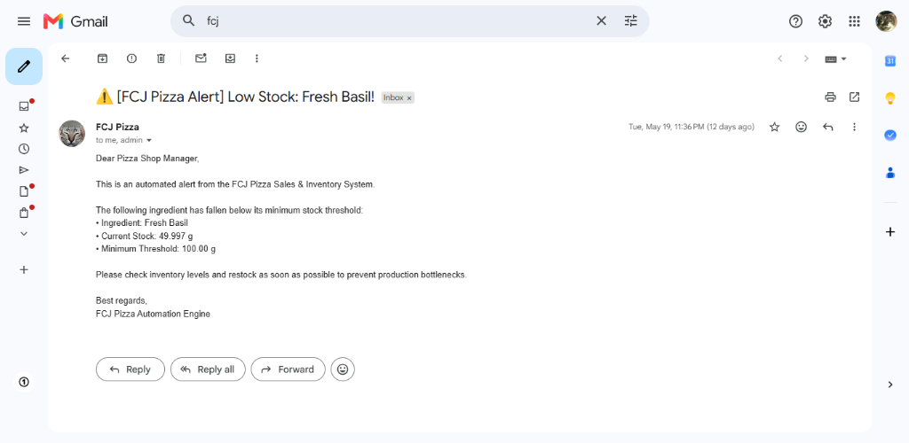
Instant Report Generation
Aggregates daily, weekly, and monthly transactions, compiling them instantly into un-editable graphical sales charts and inventory reports. Removes manual ledger logging errors and saves operational hours.
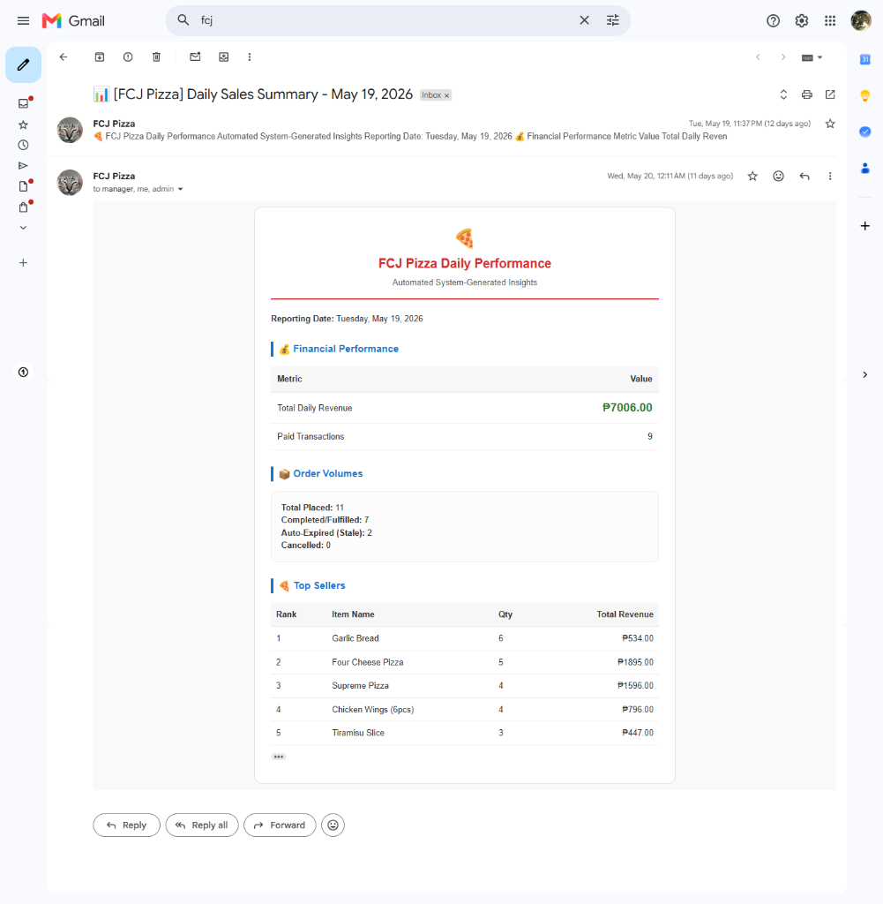
Predictive Demand Smoothing
Integrates double exponential smoothing (**Holt's Linear Smoothing** and **Linear Regression**). Computes future restocking demands and maps sales seasonalities automatically based on historical data.
Interactive System Gallery
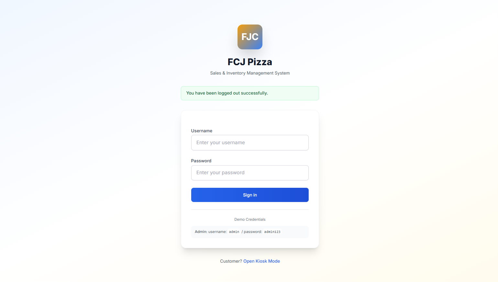
System Login Gateway
Secure entry point with standard credentials input. Demonstrates clear design integrity and responsive elements.
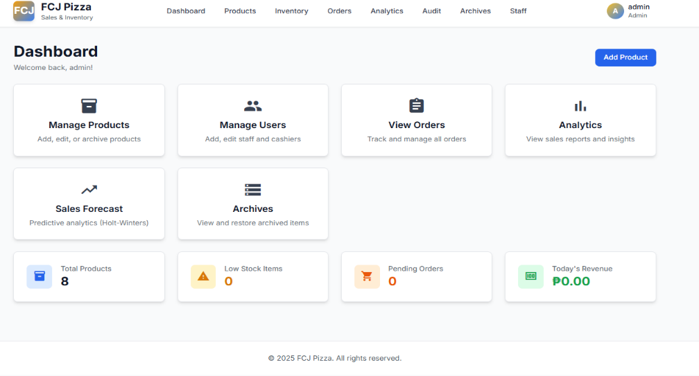
Operational Dashboard
Main admin dashboard showing daily sales totals, cashier statistics, active logs, and threshold warnings in real-time.
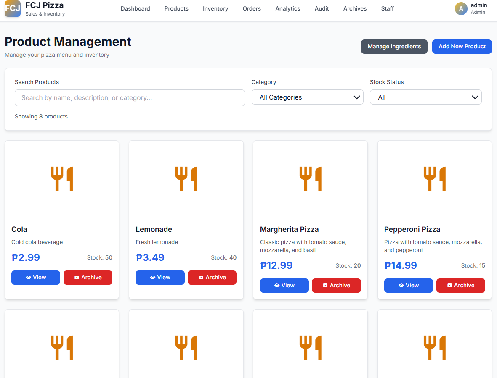
Product Menu Management
Administrative interface for menu price links, active recipe modifications, menu uploads, and categories catalog.
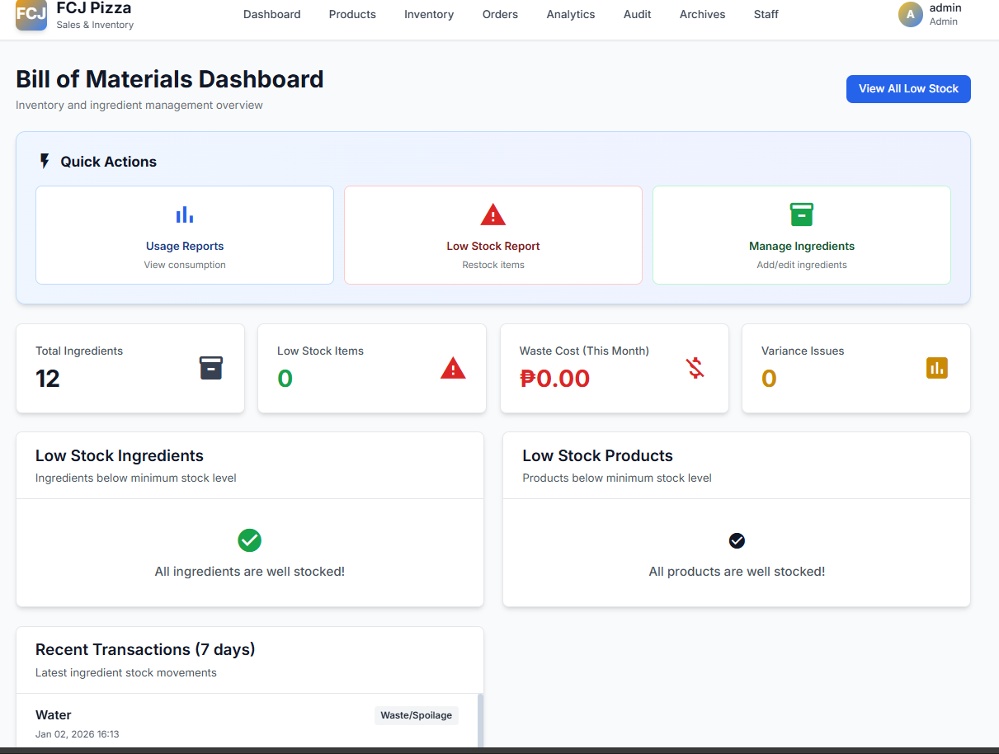
Bill of Materials & Stock
Ingredient-level stock counts, safety margin alerts, waste calculation summaries, and material cost auditing lists.
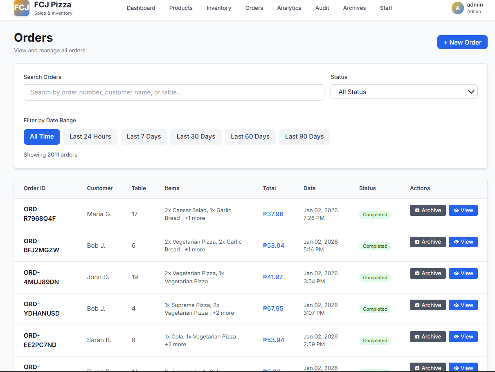
Transaction & Order Log
Sales record tables showing customer names, unique Order IDs, exact items bought, totals, dine-in/takeout tags, and active status.
View Analytics
Live revenue charts, transaction frequency graphs, ranking lists for top pizzas/drinks, and direct sales forecasting parameters.
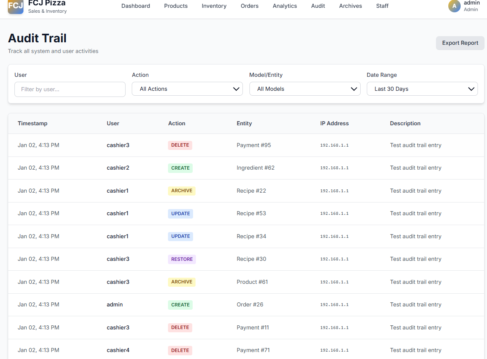
View Audit Trail
Granular system security logs tracking timestamps, staff IDs, IP addresses, browser agents, and exact actions for accountability.
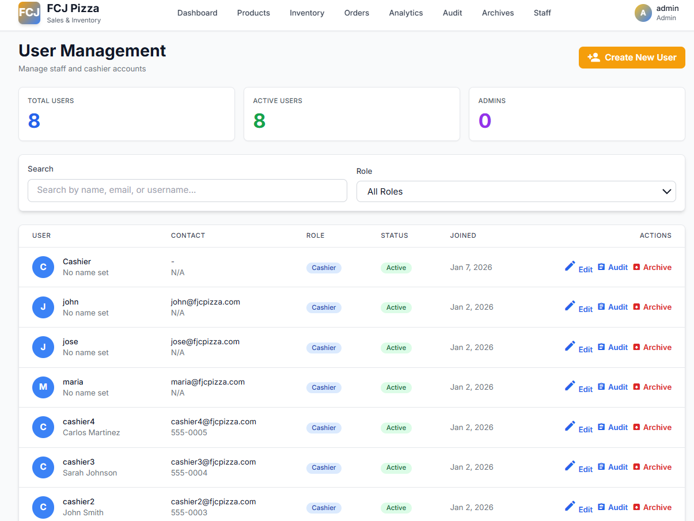
Staff Roles Management
Centralized User management list for creating logins, assigning roles (Admin/Cashier), and updating passwords.
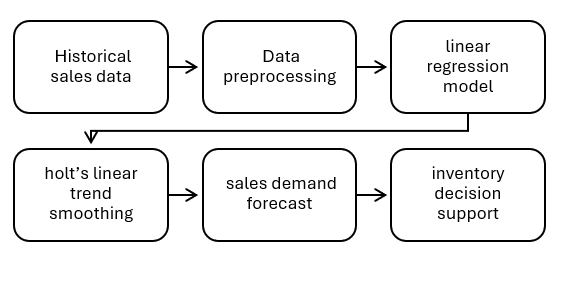
Decision Support Framework
Illustrates the statistical engine: Linear Regression trends and double exponential Holt's Smoothing parameters.
Research Design & Demographics
Structured Evaluation Matrix
To ensure high software quality standards, evaluations were performed with a sample of active system users based on the international ISO/IEC 25010:2011 Software Quality standard.
Non-probability Convenience Sampling was selected to access direct active operators (owner, cashiers, customers) for practical, highly relevant feedback.
Respondent Classifications
| Respondent Group | Population (N) | Proportion | Sample Size (n) |
|---|---|---|---|
| Administrator / Owner | 1 | 3.3% | 1 |
| Cashiers / Staff | 4 | 13.3% | 3 |
| Customers | 25 | 83.3% | 19 |
| Total | 30 | 100% | 23 |
ISO/IEC 25010 Quality Ratings
System Validation Metrics
Evaluation of the sales and inventory system with QR code-based ordering and predictive analytics achieved outstanding scores, yielding ratings from Acceptable to Highly Acceptable across all software quality criteria.
Primary Highlights
Highly rated in Usability (due to responsive customer screens) and Security (stellar role segregation and encryption).
Core Quality Characteristics Evaluated
1. Functional Suitability
Aligns perfectly with small-business workflows.
2. Usability & Learnability
Requires zero training for staff and customers.
3. Security Parameters
RBAC and encrypted logs defend transactions.
4. Performance Efficiency
Rapid load speeds and minimal database queries.
Conclusions & Recommendations
Research Summary
The development of a Web-Based Sales and Inventory Management System successfully solved the key bottlenecks of manual transactions at FCJ's Barihan branch, lowering order durations and data errors.
Deep gratitude to our Adviser, Mr. Jonelle Angelo Cenita, for his expert guidelines and invaluable insights.
Special Acknowledgements & Professional FeedbackDocument to system consistency, machine learning guidance, and professional feedback.
System consultation and professional feedback.
Dashboard and Decision Support System guidance.
Research paper professional feedback.